Project writeups, notes, and things I found interesting. Also see reading, a running list constructed from my daily blogs & papers digest.
My diploma thesis at NTUA. A frozen 7B teacher shapes OpenVLA and SmolVLA through a contrastive loss that is dropped after training, and the students gain 4.7 and 10.4 points on LIBERO-Spatial at no inference cost.
An underactuated planar quadrotor with a racket, keeping a rally going under wind while it only sees the ball every 0.30 s. Five controllers, and why survival is not competence.
A simulated rover with a stereo pair, wheel encoders and a gyro has to find a marked rock, drive up to it without touching anything, and photograph it. 40 of 40 random fields, and an ablation of what each safety layer is worth.
A full screen countdown, stopwatch, and clock drawn in a seven segment font, and how you fake a hover event in a terminal that has none.
This is the summary of my diploma thesis at NTUA, supervised by Panayiotis Tsanakas with Vasileios Balntas as co-supervisor. The full title is Teacher-Student Knowledge Distillation for Efficient Deployment of Vision-Language-Action Models in Robotic Manipulation.
Vision-Language-Action models learn to control robots from expert demonstrations, and those are expensive and not very diverse. LAPA sidesteps part of this by pretraining a 7B model on latent actions extracted from videos, so it never needs action labels. The catch is the ratio. Robot demonstrations number in the hundreds of thousands while human videos number in the billions, and a model large enough to absorb that much video will be too slow for real time control. The thesis asks whether a big model like that can hand what it knows to a small one that stays fast.
LAPA is the frozen teacher. I used two students. OpenVLA shares LAPA's Llama 2 backbone and the OXE training data, so it is the friendly case. SmolVLA has a 450M parameter backbone that is 15.5 times smaller, a different architecture and a different pretraining set, so it is the stress test.
Both models see the same frame and instruction. I take the last hidden states from each, average them over the sequence, and pass the student's vector through a small MLP that maps it to the teacher's dimension (4096 for LAPA and OpenVLA, 960 for SmolVLA). An InfoNCE loss then pulls each student vector toward the teacher vector of the same frame and pushes it away from the other frames in the batch. The total loss is the student's own behavioral cloning loss plus a weight λ times the InfoNCE term.
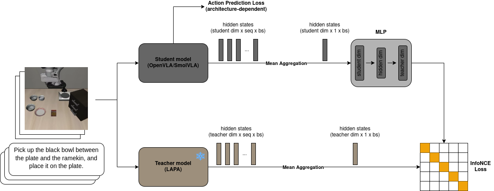
For OpenVLA I used LoRA for 25,000 steps at batch size 20 on a rented A100, with λ of 0.05, a temperature of 0.07 and an MLP hidden size of 2048. SmolVLA trained for 30,000 steps at batch size 32 on a local RTX 3060 with λ of 0.1, a temperature of 0.12 and a hidden size of 8192. Everything was scored on LIBERO-Spatial, ten tabletop tasks of the form pick up the black bowl at some location and place it on the plate, over three seeds.
| student | vanilla | distilled | gain |
|---|---|---|---|
| OpenVLA (7B) | 86.0 | 90.7 | +4.7 |
| SmolVLA (450M) | 77.1 | 87.5 | +10.4 |
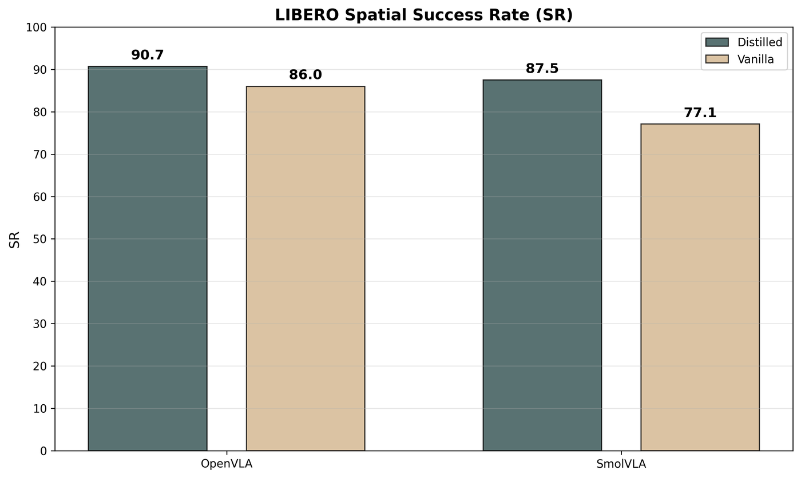
The larger gain on SmolVLA was the result I cared about most, because it means the transfer survives a mismatched backbone. A likely part of why OpenVLA gains less is that it can only be fine-tuned with LoRA and has to run in 8-bit on my hardware, and both of those cost it some accuracy before distillation even starts.
Mean aggregation over the sequence beat taking the last hidden state, 87.5 against 84.1. The loss weight and temperature interact, and the best cell for OpenVLA (λ of 0.05, temperature 0.07) reached 90.7 while its neighbours dropped as low as 81.5. The standard deviations across seeds run from 6 to 19 points, so I would not read much into differences inside that range.
| OpenVLA | τ = 0.02 | τ = 0.07 | τ = 0.12 |
|---|---|---|---|
| λ = 0.01 | 87.7 | 88.0 | 84.5 |
| λ = 0.05 | 88.2 | 90.7 | 82.5 |
| λ = 0.10 | 90.2 | 82.3 | 81.5 |
The MLP size told a consistent story. OpenVLA, whose representations already sit close to the teacher's, did best with a hidden size of 2048 (90.7, against 86.0 at 512 and 85.8 at 8192). SmolVLA kept improving up to 8192 (87.5, against 80.5 at 512), which fits the idea that a mismatched backbone needs a more expressive bridge. A 2048 MLP for SmolVLA still gave a 9.5 point gain with 17M extra training parameters, so the extra 24M for the last point is a real tradeoff.
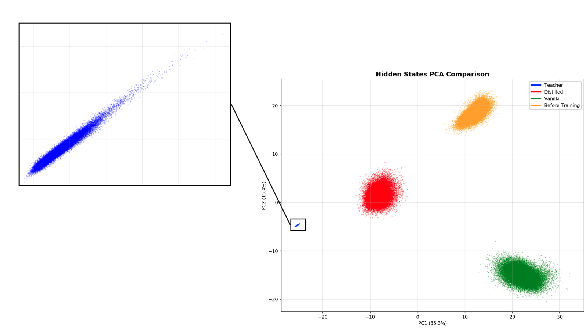
To test whether the student inherits something general, I trained SmolVLA on only ten demonstrations, one per task. The distilled model scored 19.2 and the vanilla one 15.4, about 25 percent better with identical data and capacity.
I then took OpenVLA models trained on LIBERO-Spatial and fine-tuned them on ten episodes of LIBERO-Object, which is a different set of tasks. Success was 1 percent for the distilled model and 0 for the vanilla one, which is too low to mean anything on its own. The trajectories are more informative. The mean end-effector path of the distilled model heads for the right object and tries to grasp it, while the vanilla model moves to arbitrary points in free space and then goes straight to the goal.
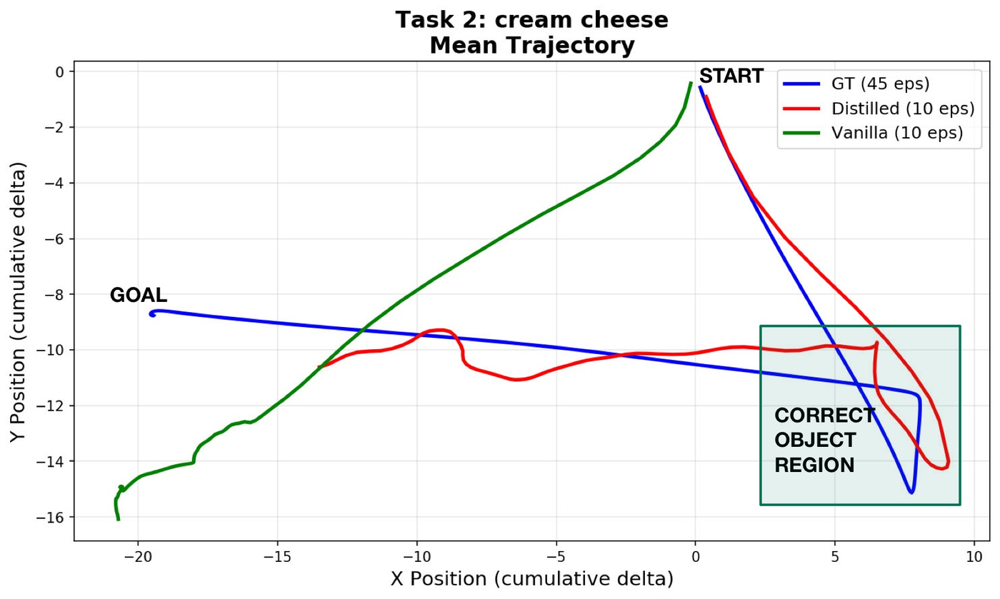
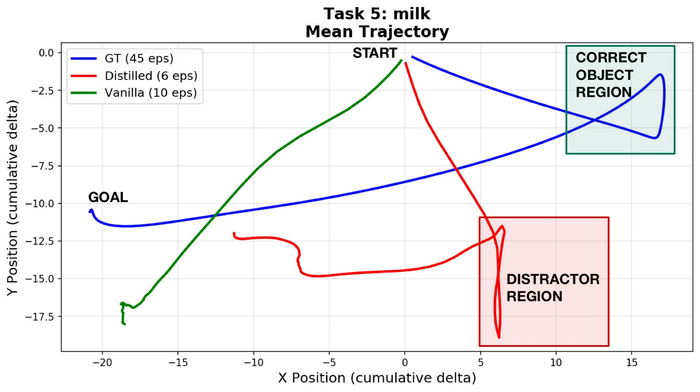
Compute decided most of the design. OpenVLA ran with LoRA and a limited number of steps on a rented GPU, and everything was evaluated in simulation on one LIBERO suite. I did not test a real arm, other suites, or other teacher pretraining sets. The experiment I most want to see is a teacher pretrained on pure human video instead of robot video, because that is the setting the method is meant for.
A planar (2D) underactuated quadrotor carries a racket and has to bounce a ball so that every apex lands on a commanded height, then keep the rally going indefinitely. The catch is that it fights wind, and it only sees the ball every 0.30 s through noisy measurements, so most of the work happens between observations.
The stack is a bounce aware Kalman filter that propagates the ball through its own contact discontinuity, plus a controller that plans each strike against a fixed anchored plane rather than the racket's live rising plane. An earlier lead float version taught me the most. It survived beautifully by tapping the ball near its apex and almost never scored, which is why the grader also requires the ball to genuinely fall before an apex counts. Survival is not competence.
The final anchored controller with lateral follow tuning reaches 35.0 and 19.3 good bounces per 20 s at the two target heights, at 98% and 91% survival, up from 17.8 and 0.1 bounces at 9% and 0% survival for the naive proportional baseline, measured over 100 seeds per cell. The write up is the real deliverable, a single self contained HTML report with the maths, every plot, and video of each landmark controller inlined.
A bounce counts as good only if its apex is within 15 cm of the commanded height and the ball fell below 1.25 m beforehand. The second condition is the honest part, since without it a controller can score by nudging the ball near the top of its arc. Two conditions are used throughout. Nominal has light wind and a fixed drop height, and moderate has stronger wind and a randomised drop height. Every number below uses 100 seeds so none of it can be cherry picked.
The clips below are drawn from the simulation logs, so they show exactly what the grader scored. The green band is the target height plus or minus 15 cm. A green dot marks a good apex, a red ring marks a missed one, and a blue ring flashes when a sensor reading arrives. The counters at the top keep the running totals.
The ball is observed once every 0.30 s and a bounce arc lasts about a second, so the controller sees two or three samples per bounce and never the moment of contact. It has to predict where and when the ball will cross the racket. A plain constant velocity filter breaks at every impact, so the filter I use flips the vertical velocity at the strike plane, inflates its process noise through contact, and supports the ball while it rests on the racket.
| RMS error | plain filter | bounce aware |
|---|---|---|
| height, whole run | 22.7 cm | 3.3 cm |
| height, free flight | 12.2 cm | 1.4 cm |
| vertical speed, whole run | 1.81 m/s | 0.44 m/s |
| vertical speed, free flight | 0.86 m/s | 0.085 m/s |
What the controller actually consumes is the predicted contact. 250 ms before impact it is within 2.5 cm and 123 ms, and by 100 ms before impact it is within 1.8 cm and 75 ms.
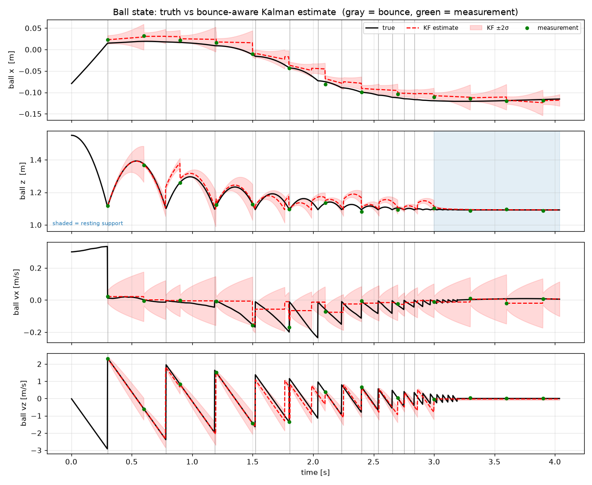
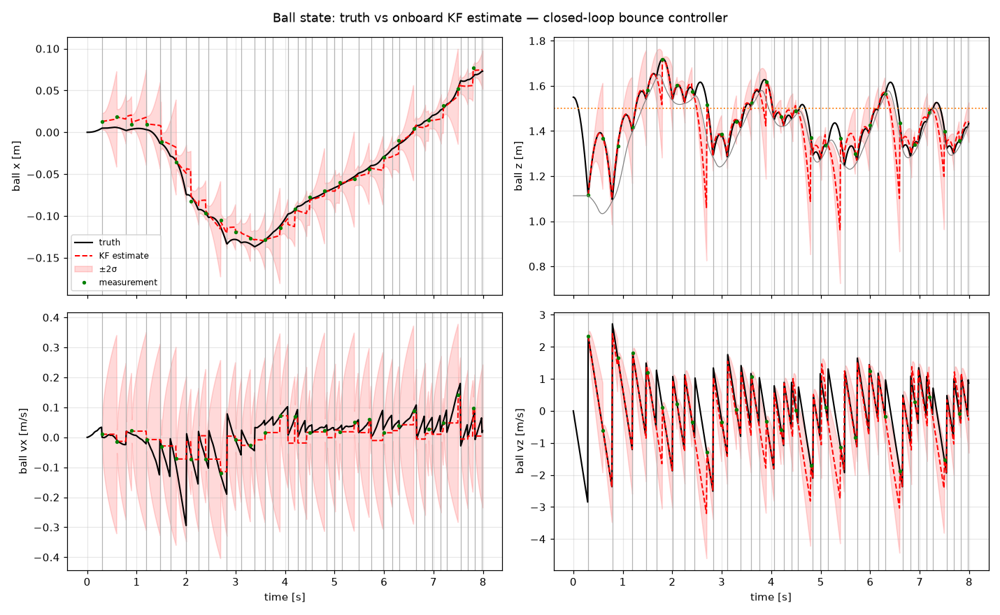
| controller | good bounces / 20 s (1.5 m) | (2.0 m) | survival (1.5 m / 2.0 m) |
|---|---|---|---|
| baseline | 17.8 | 0.1 | 9% / 0% |
| fixed z | 35.8 | 0.0 | 70% / 27% |
| lead float | 3.0 | 1.6 | 87% / 69% |
| anchored | 27.5 | 9.6 | 55% / 11% |
| anchored + tuned | 35.0 | 19.3 | 98% / 91% |
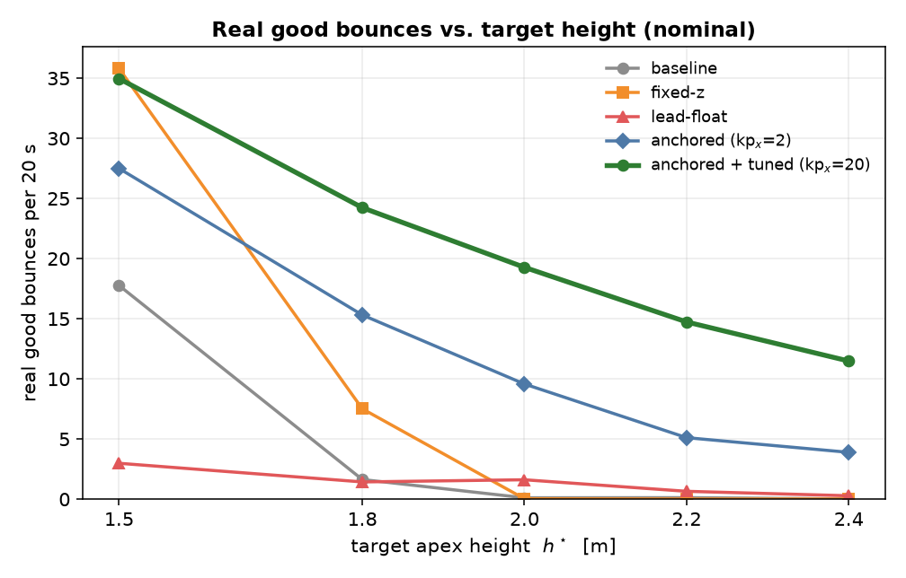
1. Baseline. A proportional velocity loop computes the rebound speed needed for the target apex and drives the racket to it. At 1.5 m it rallies happily, but asked for 2.0 m it undershoots, has no lateral authority, and lets the ball walk off.
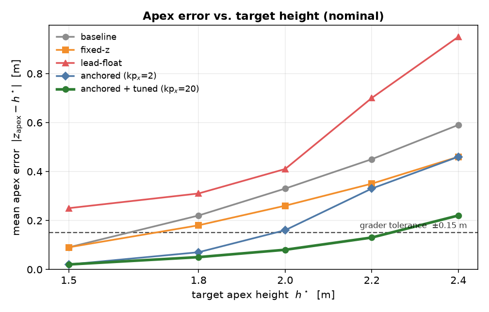
2. Fixed z flick. Flicking from a fixed racket height and adding a small tilt bias proportional to the ball's horizontal speed keeps the ball centred. It is the best easy target scorer of all five, but it has no way to lift the apex. At 2.0 m it keeps the ball alive for 27 bounces and none of them is on target.
3. Lead float. I tried striking earlier by leading the ball off the live, rising racket plane. Planning against a plane that is itself rising makes the timing circular, the approach shrinks toward zero, and the strike degenerates into a tap near the apex. It scores well on the wrong metric, with 67 to 87 percent survival at every height, while its real good bounces collapse.
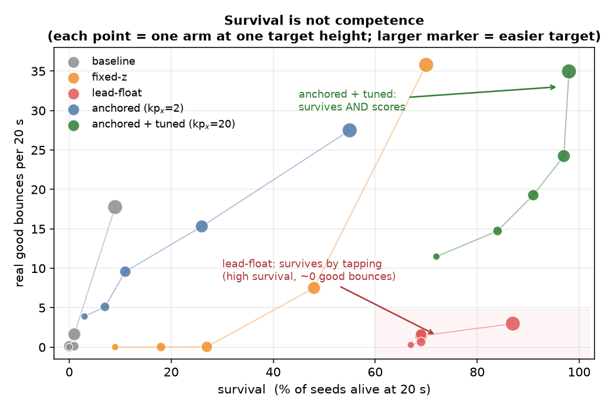
4. Anchored strike. The cure is to plan against a fixed plane at 1.043 m instead of the live racket. The ball must actually fall to that plane, and the strike gives it the rebound speed needed for the target apex. The racket to ball map is fit online with a two point secant, so the flick lands despite a restitution of 0.831. The bounces are real now and the high targets are reachable, but at height the racket does not get under the ball fast enough and the ball drifts away after a good run.
5. Tuned lateral follow. The vertical game was solved, so the leak was lateral. Because the drone is underactuated, sideways acceleration is commanded through pitch, with a PD on the horizontal error and the damping kept critical. The one free knob is the follow stiffness, and sweeping it shows a window.
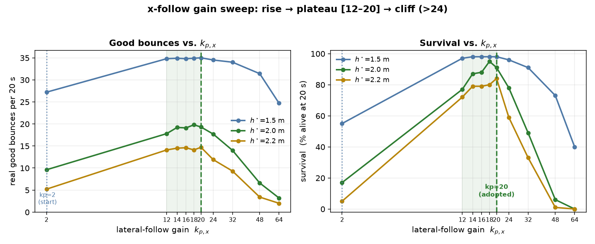
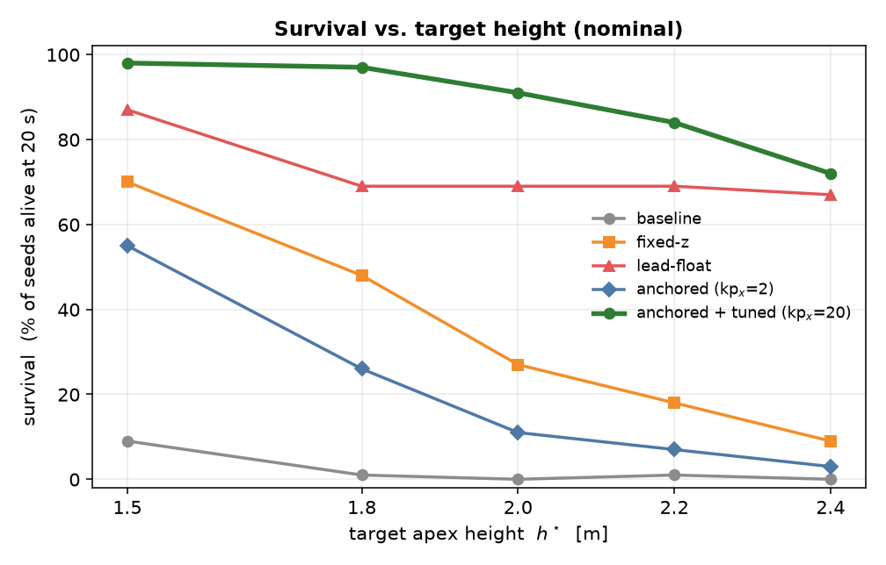
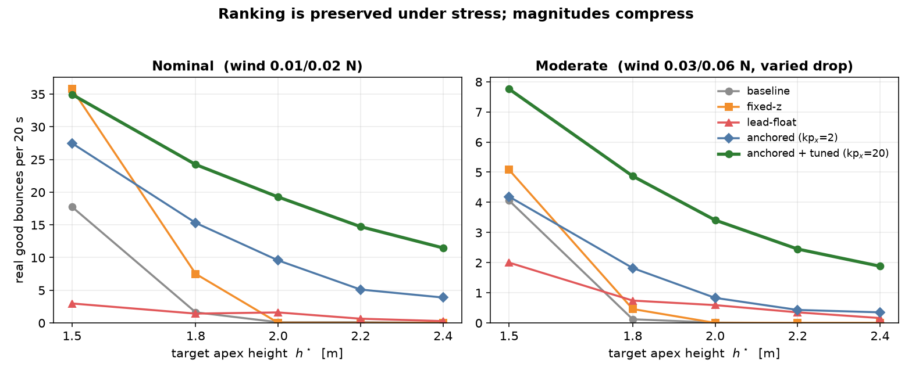
Two things mattered more than any gain. The first was the grader. A metric that measures survival alone would have crowned the lead float controller, so the honest grader with its valley test is what kept the project honest. The second was structural. Anchoring the strike plane fixed more than any amount of tuning did, and the tuning only became worth doing once the structure was right.
A simulated rover starts at one end of a 7 m wide corridor full of rocks and soft soil. It has to find the one rock with a cyan marker about 22 m away, drive up to it without touching a rock or leaving the corridor, and take a photo of it. All it has is a stereo camera pair, wheel encoders, a gyro and an IMU. There is no GPS, no map and no ground truth, and the true traction, motor lags and gyro bias change from field to field, so it cannot trust its own motion model either.
I wrote the whole thing in pure Python and OpenCV, simulator included. The stereo images come from a ray caster that intersects a height field and textured ellipsoid rocks, with noisy sensors and slope and slip in the dynamics.
Block matching gives a disparity map. A robust polynomial fit in disparity space models the ground, whatever the slope, and removes it. What remains is split into connected components and each one becomes a rock with a point cloud, a radius and a footprint. Rocks that are too close for good stereo are found from the shift between the left and right silhouettes instead. The beacon is found by its cyan marker in HSV, checked against stereo support and refined with GrabCut. Detections are fused across frames into landmarks with covariances, and footprints are remembered so a rock that leaves the view is not forgotten.
Position comes from dead reckoning on the wheel encoders and gyro. Soil changes how much the wheels slip in a way the encoders cannot see, so a bank of yaw response filters with different lags estimates a traction scale online and corrects speed and heading rate with it. The IMU supplies pitch and roll for the slope terms. The mean position error over a run is about 9 cm.
The planner is a sampling MPC. Every half second it scores 105 candidates (three speeds, seven first yaw rates, five second yaw rates), rolls each one out as a unicycle for six seconds, and charges for corridor edges, rock footprints and lack of progress toward a lane or the beacon. A short horizon safety filter sits between the planner and the wheels. It re-checks a small grid of commands using the measured speed, yaw rate and slip, and can stop or reverse when something is close. If the rover makes less than 0.45 m of forward progress in 12 s, a kinodynamic beam search (nine layers, width 36) takes over to find a way out, and the MPC follows the route it returns.
| variant | reached | rock contacts | beacon error | mean time |
|---|---|---|---|---|
| Direct MPC | 40 / 40 | 0 | 0.30 m | 72 s |
| without stall recovery | 40 / 40 | 0 | 0.31 m | 71 s |
| without safety filter | 36 / 40 | 4 | 0.26 m | 72 s |
| sampling MPC only | 36 / 40 | 4 | 0.26 m | 72 s |
The safety filter is what keeps the rover from touching rocks. Removing it costs four fields out of forty, and the four failures are the same with or without the recovery planner. Beacon error is averaged over the runs that reached it, so the variants without the filter look slightly better on that column because their crashing runs are not counted.
The stall recovery did something less impressive than I expected. It changes only 2 of the 40 runs and never decides whether the rover gets there. On the slowest field it finished in 130 s with recovery against 120 s without. I am keeping it because it is cheap, but the data does not make a case for it in this simulator.
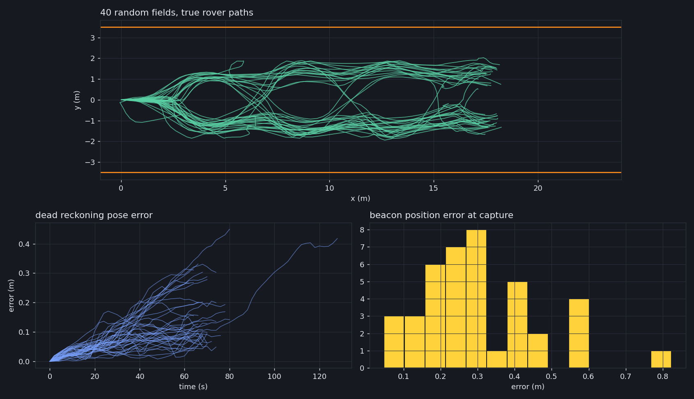
When I ran the evaluation in parallel, the same field gave a different answer depending on what had run before it in the same process. GrabCut seeds its internal clustering from OpenCV's global random number generator, so each episode inherited the state the previous one left behind. Reseeding it at the start of every episode fixed it, and I reran all four evaluations afterwards so every number above can be reproduced.
A full screen countdown timer, stopwatch, and clock for the terminal, rendered in a solid seven segment font with a warm ember palette. It takes durations in whatever form is natural (25, 90s, 1h30m, 10:00), records laps, and beeps and waits for a keypress at zero so a finished timer never vanishes unnoticed.
Most of the effort went into the layout behaving under every terminal shape. Digits never grow taller than their width allows, the date beside the clock takes only the space left spare so it never costs the display a size step, and everything is drawn on the alternate screen buffer so scrollback survives. The renderer is a pure function from state to string, which means the layout can be inspected and tested without a TTY.
There is also a slime that wanders along the floor of the box and glances up at the clock. Terminals have no hover event, so when you point at it, it startles and jumps, synthesised from SGR mouse motion reports hit tested against where it is standing. Install it with npm install -g github:808kalli/cli-timer.
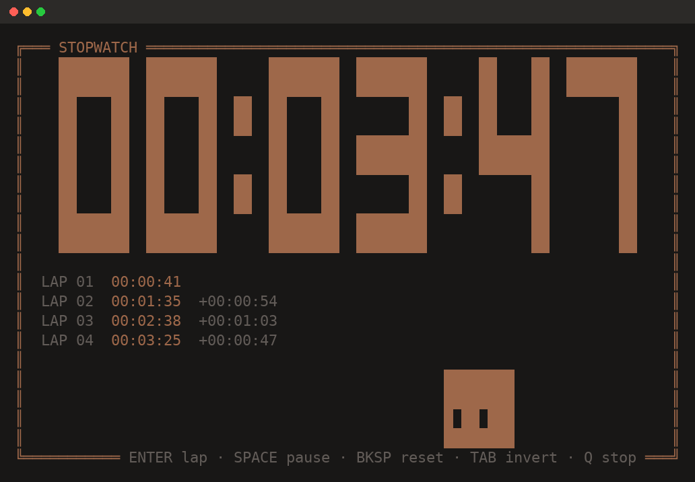
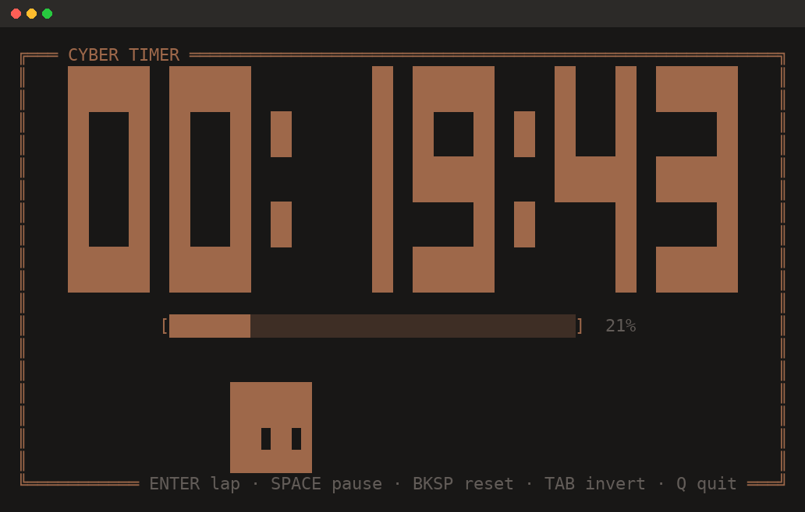
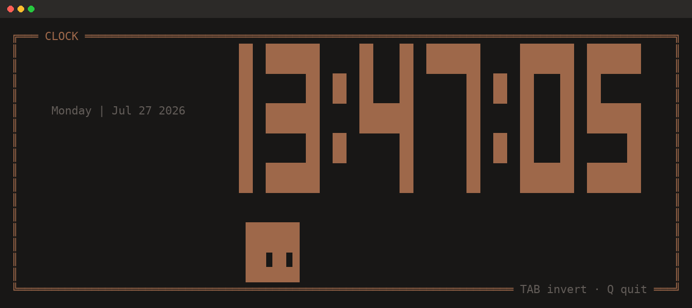